Co-op Mission Guide: The Vermillion Problem
Veridia Prime
Sections on this Page
Mission Summary
Amon has incited volcanic eruptions that are destroying Veridia Prime. Gather the crystals required to reactivate the environmental stabilizers and restore the planet before it is obliterated.

Objectives
Primary Objective
- Collect Xenon Crystals (20).
- Do Not Allow Planet to Explode.
Secondary Objective
- Kill the Molten Salamander (1)
Enemy Base Analysis
Change all base analysis pictures to race:
Pushing into enemy bases is a key part of play on The Vermillion Problem, because most crystals will spawn behind enemy lines.
The first base you will be pushing into will be the one at your expansion. It is guarded by a small force of units, so you will need a small army or a hero unit to clear it.
Beweare of the small force of units guarding the northern ramp (not shown below). This force of units is based on the race, and consists of the following:
- Protoss: Three Stalkers
- Terran: Three Goliaths
- Zerg: Two Ravagers and Eight Zerglings
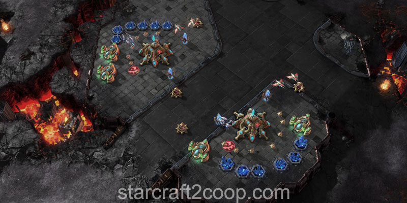
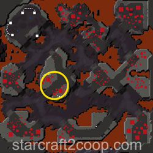
At this point, the bases you will clear will usually depend on where the crystals spawn, rather than a particular order.
The base to the West is usually the most lightly defended base after the expansion. It is shown below:
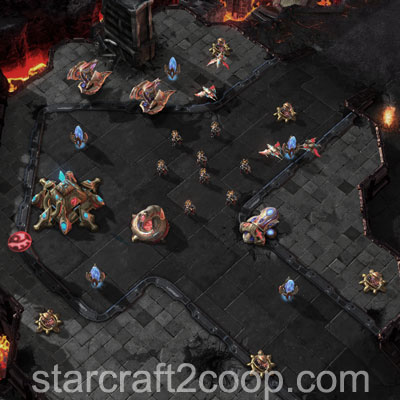
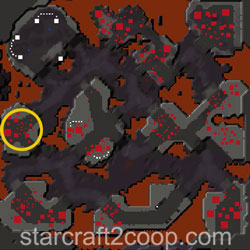
The next base usually captured is the base to the North. It is slightly more heavily defended, but should be relatively easy to capture.
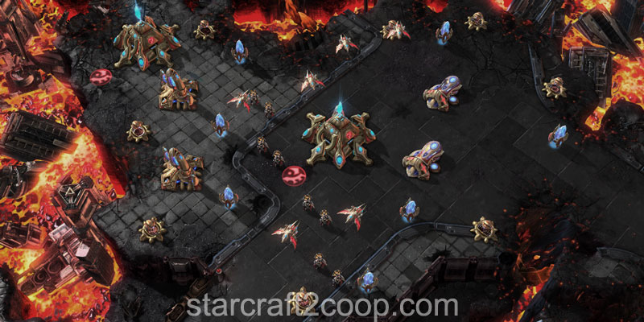
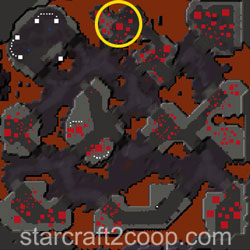
Due to the flow of the mission, there will be a lava surge by the time this base is cleared. It is usually optimal to continue pushing downwards to the North-East base. Watch out for the Hybrid Dominator in this area.
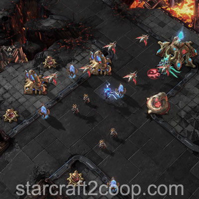
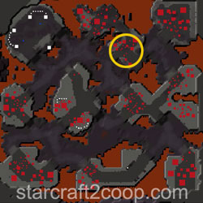
The rest of the bases do require some strong forces in order to clear. The base to the South-West is probably the easiest of the remaining bases that can have crystals near them.
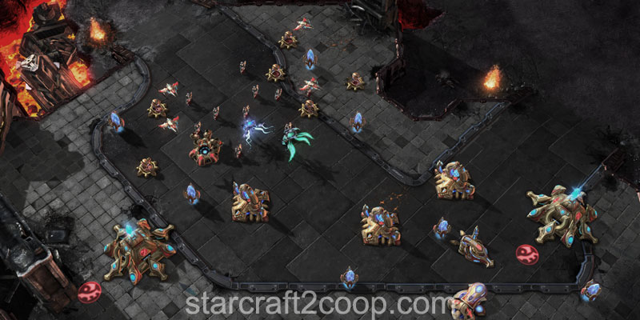
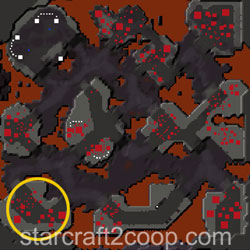
If you choose to push East from this base towards the bonus objective, you'll need to destroy a small enemy camp. Note that the ramp from the opposite side of this island is unguarded and you can reach the bonus objective without fighting enemy units.
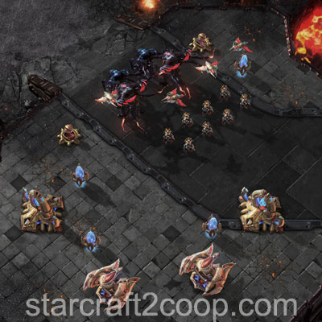
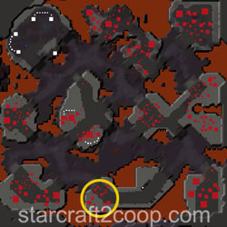
If you push East from your expansion, there are a patches of enemies present. The first is a camp of units.
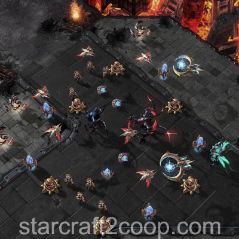
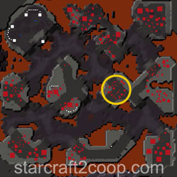
If you follow the path up North, you'll get to the enemy base.
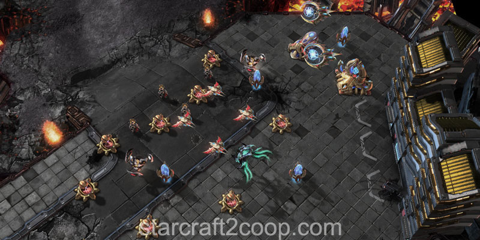
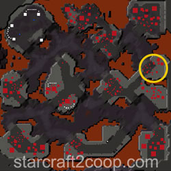
Just South of this base, there is a small enclave of enemies.
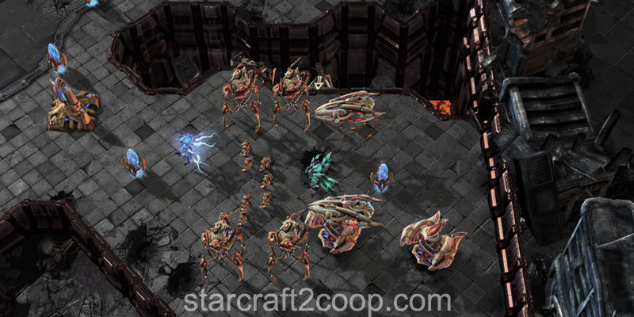
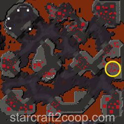
Completing the Bonus Objective
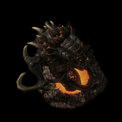
The bonus objective requires you to kill the Molten Salamander that spawns in the marked location below.
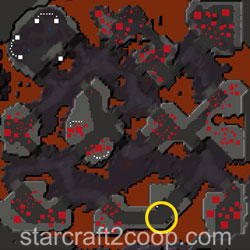
Timings
Note: Information on Tech and Strength levels can be found on the Enemy Compositions page.
Some attack waves in this mission have variance associated with their spawn timings. That is, attack waves have a little bit of randomness as to when they will spawn. The attack wave timings and variances are shown below. A variance of 1:30 seconds means attack waves can spawn anywhere from 1:30 before the attack wave timing to 1:30 after the attack wave timing.
The Attack Wave Timings for this mission are:
| Wave | Time | Tech Level | Strength Level | Target |
|---|---|---|---|---|
| 1 | 3:30 | 1 | 1 | Main |
| 2 | 6:00 | 2 | 2 | Main |
| 3 | 9:00 ± 1:30 | 3 | 4 | Expansion |
| 4* | 12:00 ± 1:30 | 3 | 4 | Expansion |
| 5 | 15:00 ± 1:30 | 5 | 5 | Main |
| 6 | 18:00 ± 1:30 | 5 | 5 | Main |
| 7 | 21:00 ± 1:30 | 5 | 5 | Expansion |
| 8 | 24:00 ± 1:30 | 6 | 6 | Expansion |
| 9 | 27:00 | 5 | 5 | Expansion |
* Attack wave #4 is a multi-pronged attack wave that will have attacking units spawn from two different locations.
The final attack wave will repeat every two minutes until the end of the mission.
The Molten Salamander will start to spawn every lava surge after 11:00.
Spawn Points
The spawn points for attack waves are shown below.
Attack Wave Spawn Location (West Base):
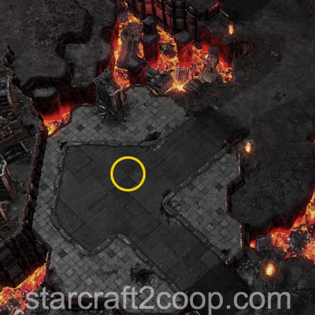
Attack Wave Spawn Location (East Base, usually not cleared because crystals do not spawn there):
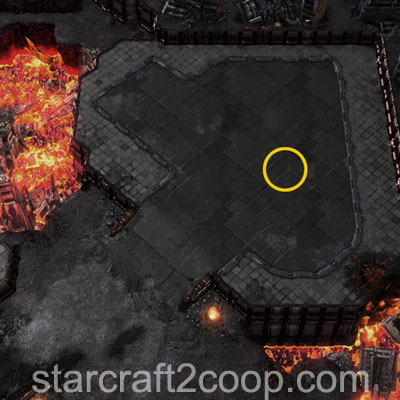
Attack Wave Spawn Location (South, near Bonus Objective):
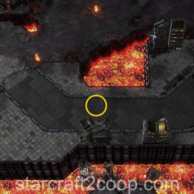
Crystals also have certain spawn locations. However, at each collection stage, crystals can spawn in more than 10 individual locations, making it infeasible to list them all out individually. Addtionally, spawn locations are randomized as the mission progresses.
Crystal Spawn Order
The spawn order and locations of the Xenon Crystals can be viewed below. This may be useful when playing against mutators that hide the crystal locations on the minimap, such as Darkness.
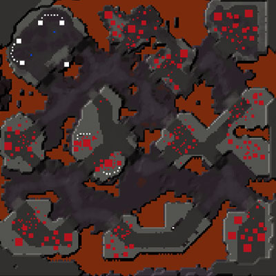
Mission Tips
- Ensure you have adequate defenses in your main and expansion for the attack waves.
- Pay attention to your army as you push into enemy defenses due to the large number of Hybrid Dominators present on this map.
- All crystals from the 3rd spawn will come with a small harass force. Ensure you clear them out before you send your workers to pick up the crystal. These forces do not spawn immediately with the crystal, and have some travel time before they arrive.
Commander-specific Tips
- Abathur: Place Toxic Nests on spawn locations to weaken attack waves.
- Han & Horner: Place Mag Mines on spawn locations to weaken attack waves.
- Kerrigan: Place Omega Worms on each of the islands to help you and your ally intercept attack waves and crystals in a timely manner.
- Nova: If you use Siege Tanks, place Spider-mines on spawn locations to weaken attack waves.
- Raynor: If you use Vultures, place Spider-mines on spawn locations to weaken attack waves.
- Stetmann: Use the Speed Stetzone to return crystals faster.
- Stukov: Once you have creep spread, move your Infested Colonist Compound to your Expansion area.
- Zagara: Build your macro hatcheries at your expansion for quick reinforcements.
- Zeratul: Place a Void Array on each of the islands to help you intercept attack waves and crystals in a timely manner.